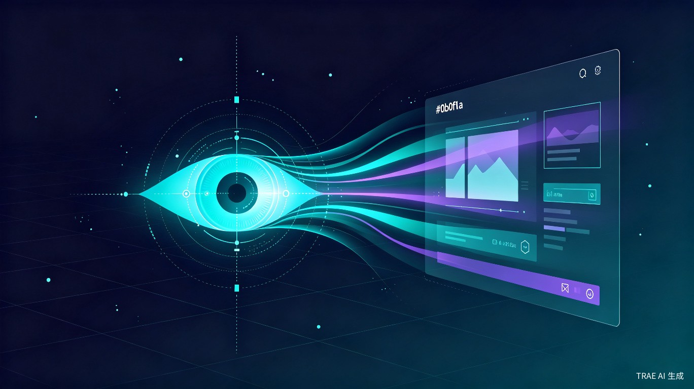

智眼交互 IntentEye — Gaze-Driven AI Interaction
以目光为指令，以意图为驱动。融合眼动追踪、轨迹分析与端云协同 AI， 让人类"所看即所控"，重塑与操作系统的交互方式。
创意名称与产品概述
智眼交互 IntentEye 是一套以眼动焦点与行为轨迹为输入、 以端云协同 AI 为大脑的智能交互系统。它让设备"看懂"用户在看什么、想做什么， 主动理解意图并辅助完成操作，将人机交互从"手动操控"进化为"意图驱动"。
[ 问题 ]想解决什么问题
当前人机交互仍依赖键盘鼠标的精确点击与层级菜单导航，操作链路长、认知负担重。 用户"眼睛已看到目标"却仍需"手动逐级寻路点击"，所见与所控之间存在割裂， 复杂任务难以通过自然意图直接完成，跨应用协作更是频繁中断思路。
[ 动机 ]为什么会想到做这个
灵感来源于日常观察：用户使用设备时，目光已自然聚焦于目标元素，但手仍需移动鼠标完成点击—— 这中间存在巨大的交互冗余。与此同时，眼动追踪硬件普及化（手机/桌面摄像头即可实现）、 端侧小模型推理能力跃升、云端大模型理解能力增强， 三者技术成熟交汇，使"以眼达意、以 AI 执行"从概念走向可行。
[ 产品 ]大概是什么产品
一套跨平台智能交互系统（桌面端 + 移动端 App），融合摄像头眼动追踪、 鼠标轨迹分析、语音输入多模态信号，通过端侧小模型实时识别用户意图， 并协同云端大模型理解复杂上下文，最终辅助或自动完成操作系统与应用层面的操作。
flowchart LR
A["📷 摄像头
眼动焦点捕捉"] --> D["🖥️ 实时画面
屏幕上下文"]
B["🖱️ 鼠标轨迹
行为分析"] --> D
C["🎤 语音输入
自然语言"] --> D
D --> E["🧠 端侧小模型
意图识别"]
E -->|"动作·焦点·画面"| F["☁️ 云端大模型
深度理解与决策"]
F -->|"操作指令"| G["⚡ 辅助操作
手机 / 电脑"]
G --> E
目标用户及痛点
[ 用户 ]面向哪些用户
重度办公人群
知识工作者、设计师、程序员等每日长时间使用设备、频繁跨应用协作的用户。
多任务并行处理者
需要同时处理多个窗口与信息源、追求极致操作效率的效率工具爱好者。
手部不便人群
因伤病、残障或老年导致手部操作困难，需要更自然交互方式的无障碍用户。
银发数字用户
面对复杂界面无所适从、难以记忆操作路径的老年群体，需要降低数字门槛。
[ 场景 ]在什么场景下使用
日常跨应用办公协作（如在文档、表格、浏览器间快速切换并提取信息）、 复杂数据录入与文档处理、多窗口信息检索与整理、双手被占用场景（如烹饪时查菜谱、维修时看教程）、 以及需要无障碍辅助的操作场景——用户只需"看"与"说"，系统理解并执行。
[ 痛点 ]当前痛点
- 操作步骤繁琐，跨应用切换需反复点击导航，打断思路与工作流
- 快捷键记忆成本高，不同应用快捷键体系不一致，学习曲线陡峭
- 跨应用协作需手动复制粘贴与上下文切换，信息流转效率低下
- 复杂任务无法用自然语言直接驱动，必须拆解为大量手动子操作
- 长时间重复性点击导致手部疲劳，甚至引发重复性劳损（RSI）
- 老年及障碍人群面对复杂界面无所适从，数字鸿沟难以逾越
价值与意义
智眼交互不仅是效率工具，更是一次人机交互范式的跃迁—— 从"人适应机器的操作逻辑"转向"机器理解人的自然意图"。
效率提升
将"看到 → 想到 → 操作"链路从手动多步点击压缩为"凝视 + 语音"一步触发， 显著降低交互摩擦与认知负荷。端侧模型毫秒级响应常见意图， 云端大模型处理复杂任务编排，实现全场景效率跃升。
社会价值
为手部障碍人群、老年群体提供更自然、更低门槛的交互方式， 仅需目光与语音即可操控设备。推动无障碍计算普惠， 缩小数字鸿沟，让技术真正服务于每一个人。